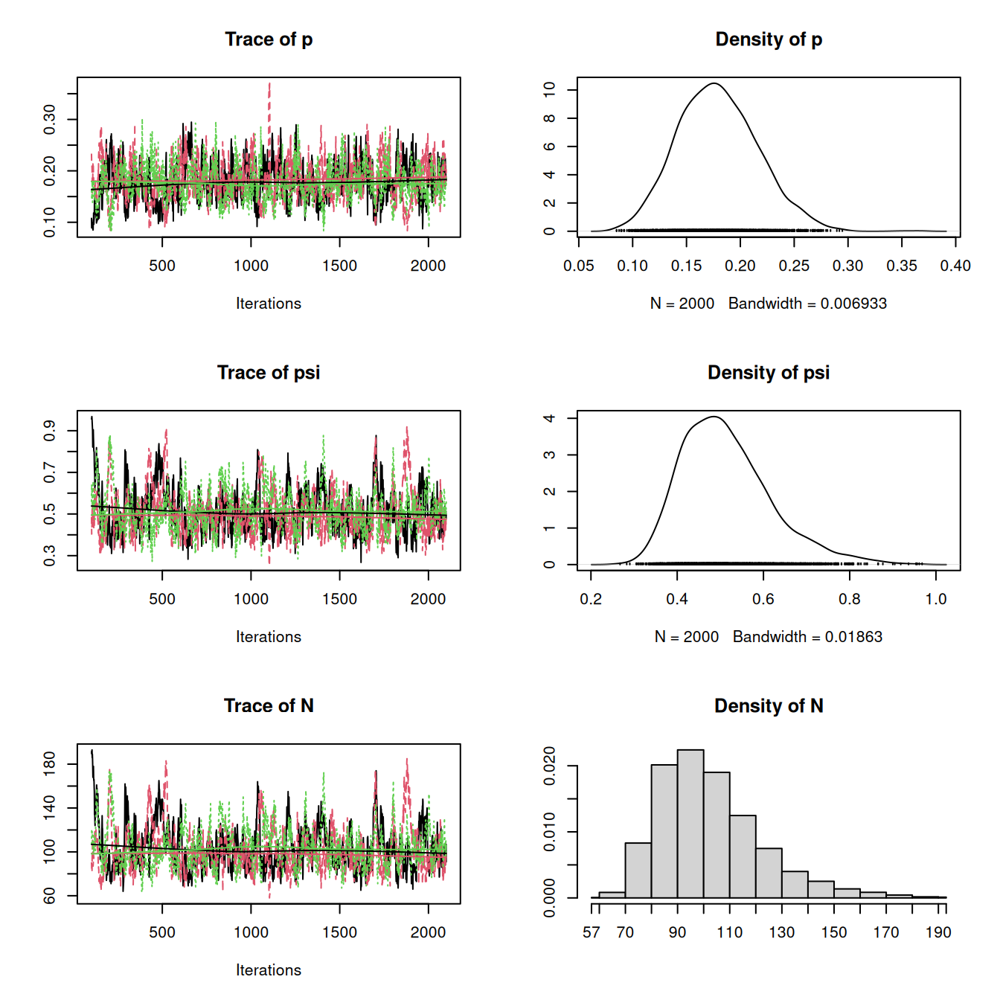
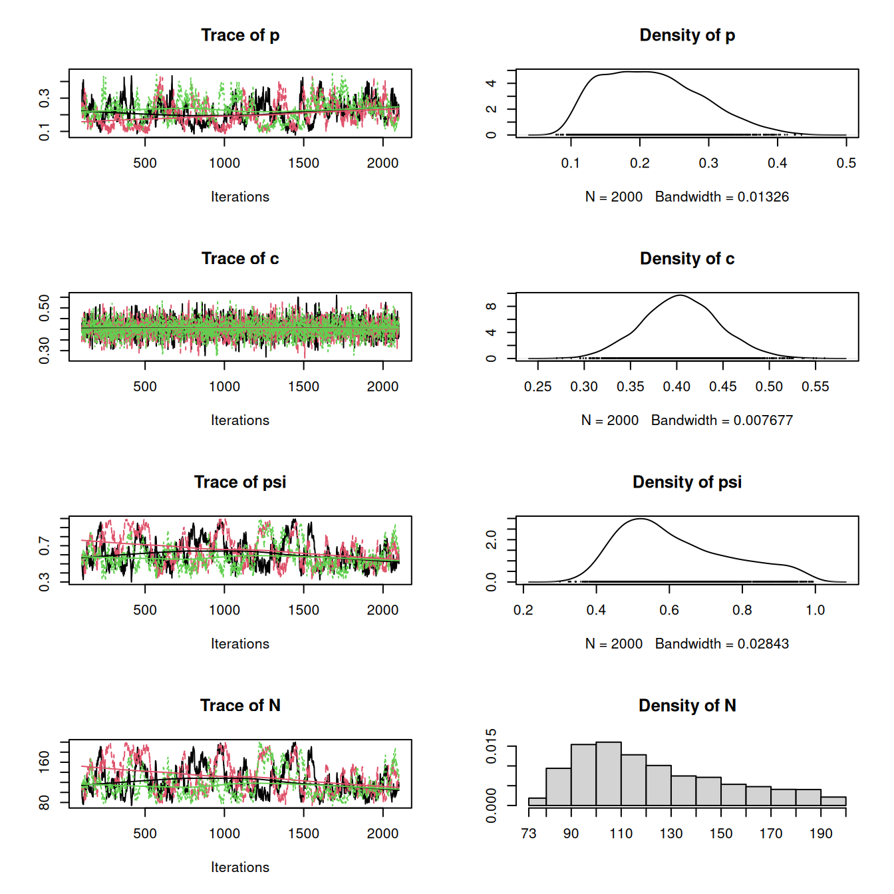

Non-spatial mark-recapture for
estimating population size
WILD(FISH) 8390
Inference for Models of Fish and Wildlife Population Dynamics
Until now, we’ve focused on models for data on aggregated quantities like abundance and occupancy.
Now we will talk about data on uniquely identifiable individuals.
This is nice because all individuals are different, and we’re often interested in these differences, even when our primary goal is inference on population-level parameters like abundance and density.
For this lecture, we will assume population closure:
There are several other assumptions that depend on the specific model being employed, including:
Later, we will relax the closure assumption so that we can study survival, recruitment, and movement.
The simplest estimator of abundance is \[ \hat{N} = \frac{n}{\hat{p}} \] where \(n\) is the number of individuals detected, \(p\) is detection probability, and \(E(n)=Np\).
In distance sampling, we modeled detection probability as a function of distance, and we replaced \(p\) with average detection probability.
For the simplest mark-recapture problems, \(p\) is a constant (scalar) and we estimate it by trapping on multiple occasions and marking and recapturing as we go.
Lincoln-Peterson
\(J=2\) occasions
Data are:
Estimator is \(\hat{N} = n_1n_2/m_2\)
Closed population models
Mark-recapture data are often called “capture histories.” Here’s an example with \(n=6\) animals captured on \(J=3\) occasions.
| Individual | 1 | 2 | 3 |
|---|---|---|---|
| 1 | 0 | 0 | 1 |
| 2 | 1 | 1 | 1 |
| 3 | 0 | 1 | 0 |
| 4 | 0 | 1 | 1 |
| 5 | 1 | 0 | 0 |
| 6 | 0 | 0 | 1 |
How do we estimate \(p\) (and \(N\)) from these data?
Conceptually…
State model
There isn’t one! \(N\) is often treated as a constant, although we sometimes put a Poisson or binomial prior on it.
Observation model (supposing \(N\) was known) \[ y_{ij} \sim \mathrm{Bernoulli}(p) \;\; \mathrm{for}\, i=1,\dots,N \]
The problem with this formulation is that we don’t observe the “all zero” encounter histories (and thus we don’t know \(N\)). As a result, the Bernoulli assumption isn’t valid, and we need to develop a model that describes how many individuals we failed to capture.
Conditional likelihood
Joint likelihood
Data augmentation
The joint likelihood is based on the multinomial distribution, with the “all-zero” encounter history being unobserved. \[ \{f_1, \dots, f_{K+1}\} \sim \mathrm{Multinomial}(N, \pi_1, \dots, \pi_{K+1}) \;\; \] where \(\{f_1, \dots, f_K\}\) are the frequencies of the observable capture histories.
Here’s an example with \(J=3\) capture occasions.
| Capture history | Multinomial cell probability |
|---|---|
| 100 | \(\pi_1=p_1(1-p_2)(1-p_3)\) |
| 010 | \(\pi_2=(1-p_1)p_2(1-p_3)\) |
| 001 | \(\pi_3=(1-p_1)(1-p_2)p_3\) |
| 110 | \(\pi_4=p_1p_2(1-p_3)\) |
| 101 | \(\pi_5=p_1(1-p_2)p_3\) |
| 011 | \(\pi_6=(1-p_1)p_2p_3\) |
| 111 | \(\pi_7 = p_1p_2p_3\) |
| 000 | \(\pi_0 = \prod_j 1-p_j\) |
More important than the estimation approach, is identification of the sources of variation in capture probability (\(p\)).
Otis et al. (1978) identified several model variations:
These can be combined, but beware of identifiability issues. See Otis et al. (1978) for details.
Later we’ll talk about “individual covariate” models.
Program MARK
R package ‘RMark’
mark runs MARK from R.R package ‘marked’
R package ‘mra’
R package ‘Rcapture’
R package ‘unmarked’
R package ‘secr’
Parameters
All capture histories (for captured and uncaptured individuals)
Observed capture histories (data)
Capture history frequencies
histories
0011 0101 1100 1010 1101 0110 1001 0001 0010 0100 1000
1 1 1 2 2 4 4 7 10 10 12 Detection frequencies
Capture probability for each occasion
All capture histories (for captured and uncaptured individuals)
Observed capture histories (data)
Capture probability for each occasion
All capture histories (for captured and uncaptured individuals)
Observed capture histories (data)
There are many flavors of \(M_h\). This one assumes there are two (unknown) groups of individuals with different capture probs.
All capture histories (for captured and uncaptured individuals)
Observed capture histories (data)
Here’s another flavor of \(M_h\): logit-normal distribution for \(p\).
All capture histories (for captured and uncaptured individuals)
Observed capture histories (data)
Before you can use ‘RMark’, you have to install MARK.
The main MARK page is here.
Instructions for Linux and Mac users
Lots of good information about closed population mark-recapture
Fit the model and set capture probability equal to recapture probability (\(p=c\)) using the share argument.
Estimates of \(p\) and \(n_0\) (called \(f_0\) in MARK)
estimate se lcl ucl fixed note
p g1 t1 0.1837077 0.0374009 0.1212906 0.2684329
f0 g1 a0 t1 42.6208640 16.7216950 20.3019990 89.4758200 Estimate of \(N\)
Estimates of \(p_j\) and \(n_0\) (called \(f_0\) in MARK)
estimate se lcl ucl fixed note
p g1 t1 0.2740198 0.0473865 0.1913594 0.3757930
p g1 t2 0.5186804 0.0592722 0.4035760 0.6318356
p g1 t3 0.2153013 0.0428690 0.1429996 0.3108977
p g1 t4 0.3718840 0.0532543 0.2746824 0.4806868
f0 g1 a0 t1 17.1823890 6.4441809 8.4388334 34.9852260 Estimate of \(N\)
Estimates of \(p\), \(c\), and \(n_0\) (called \(f_0\) in MARK)
estimate se lcl ucl fixed note
p g1 t1 0.2459652 0.0827673 0.1197363 0.4389147
c g1 t2 0.4031008 0.0431879 0.3220497 0.4898126
f0 g1 a0 t1 33.4146850 23.1165880 9.8085806 113.8331000 Estimate of \(N\)
This is a two-point mixture model.
Estimates of \(p\) and \(\pi\), the proportion of individuals in group 2.
estimate se lcl ucl fixed note
pi g1 m1 0.6554419 0.1938704 0.2612437 0.9109758
p g1 t1 m1 0.3985716 0.1171103 0.2027864 0.6332369
p g1 t1 m2 0.8435083 0.1105444 0.5107922 0.9653087
f0 g1 a0 t1 7.6766948 5.7418263 2.0786066 28.3515140 Estimate of \(N\)
Data augmentation is strange.
We add “all zero” capture histories to our data, then we try to estimate how many of them are real.
The total number of observed and augmented encounter histories is \(M\). We define the model in terms of a binary indicator variable \(z_i\), such that \(N=\sum_{i=1}^M z_i\).
We know \(z_i=1\) for the \(n\) captured individuals.
We can think about the problem like this:
| Individual | 1 | 2 | 3 | z |
|---|---|---|---|---|
| 1 | 0 | 0 | 1 | 1 |
| 2 | 1 | 1 | 1 | 1 |
| 3 | 0 | 1 | 0 | 1 |
| 4 | 0 | 1 | 1 | 1 |
| 5 | 1 | 0 | 0 | 1 |
| \(\dots\) | \(\dots\) | \(\dots\) | \(\dots\) | 1 |
| \(n\) | 0 | 0 | 1 | 1 |
| \(n+1\) | 0 | 0 | 0 | ? |
| \(n+2\) | 0 | 0 | 0 | ? |
| \(\dots\) | \(\dots\) | \(\dots\) | \(\dots\) | ? |
| \(N\) | 0 | 0 | 0 | ? |
| \(N+1\) | 0 | 0 | 0 | ? |
| \(N+2\) | 0 | 0 | 0 | ? |
| \(\dots\) | \(\dots\) | \(\dots\) | \(\dots\) | ? |
| \(M\) | 0 | 0 | 0 | ? |
The model: \[ z_i \sim \mathrm{Bern}(\psi) \\ y_{ij} \sim \mathrm{Bern}(z_i \times p_{ij}) \\ N=\sum_{i=1}^M z_i \]
Note that this looks exactly like an occupancy model.
But why bother with augmentation?
First, let’s augment the data simulated under model \(M_b\), with \(M=200\).
We also need to augment the prevcap object.
For Bayesian inference, we need priors on \(\psi\) and \(p\). \[ z_i \sim \mathrm{Bern}(\psi) \\ y_{ij} \sim \mathrm{Bern}(z_i \times p) \\ N = \sum_{i=1}^M z_i \]
A uniform prior on \(\psi\) results in a discrete uniform prior on \(N\). We can change the prior for \(N\) by changing the prior on \(\psi\), recognizing: \[ E(N)=M\psi \]
model {
p ~ dunif(0,1) ## Capture probability
psi ~ dunif(0,1) ## Data augmentation parameter
for(i in 1:M) {
z[i] ~ dbern(psi) ## DA indicator
for(j in 1:J) {
y[i,j] ~ dbern(z[i]*p) ## Model for the capture histories
}
}
N <- sum(z) ## Abundance
}Data
Inits and parameters
MCMC

model {
p ~ dunif(0, 1) ## Capture prob
c ~ dunif(0, 1) ## Recapture prob
psi ~ dunif(0,1) ## Data augmentation parameter
for(i in 1:M) {
z[i] ~ dbern(psi) ## DA indicator
for(j in 1:J) {
pc[i,j] <- ifelse(prevcap[i,j]==0, p, c) ## First cap or recap?
y[i,j] ~ dbern(z[i]*pc[i,j])
}
}
N <- sum(z)
}Data, inits, parameters to monitor
MCMC

model {
p1 ~ dunif(0, 1) ## Capture prob, group 1
p2 ~ dunif(0, 1) ## Capture prob, group 2
mixprob ~ dunif(0,1) ## Finite mixture prob
psi ~ dunif(0,1) ## Data augmentation parameter
for(i in 1:M) {
z[i] ~ dbern(psi) ## DA indicator
group[i] ~ dbern(mixprob) ## Group 1 or 2?
p[i] <- ifelse(group[i]==0, p1, p2) ## p depends on group
for(j in 1:J) {
y[i,j] ~ dbern(z[i]*p[i])
}
}
N <- sum(z)
}model {
lp.mean ~ dnorm(0,0.1) ## Mean of logit(p)
lp.var ~ dexp(1) ## Variance of logit(p)
psi ~ dunif(0,1) ## Data augmentation parameter
for(i in 1:M) {
z[i] ~ dbern(psi) ## DA indicator
lp[i] ~ dnorm(lp.mean, 1/lp.var) ## Random effect, p on logit
p[i] <- ilogit(lp[i]) ## Capture prob for individual i
for(j in 1:J) {
y[i,j] ~ dbern(z[i]*p[i])
}
}
N <- sum(z)
}We assume that variation in \(p\) arises from changes over time, behavioral effects, or random individual heterogeneity.
Individual heterogeneity models pose estimation problems.
A solution is to use individual covariates to explain the variation, rather than random effects. But what covariates are important? And how do we know the covariates values for uncaptured individuals?
With spatial capture-recapture (SCR) models we will use the unobserved distance between animals and traps as a covariate, and we’ll use a spatial point process model for animal locations.
Create a self-contained R script or Rmarkdown file to do the following:
CAWAcaps_2018.csv and fit the following models in RMark and JAGS1:
.R or .Rmd file to ELC by 5:00pm on Tuesday.